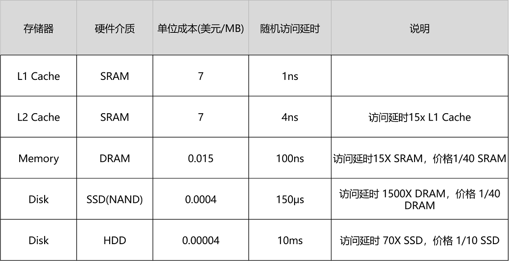
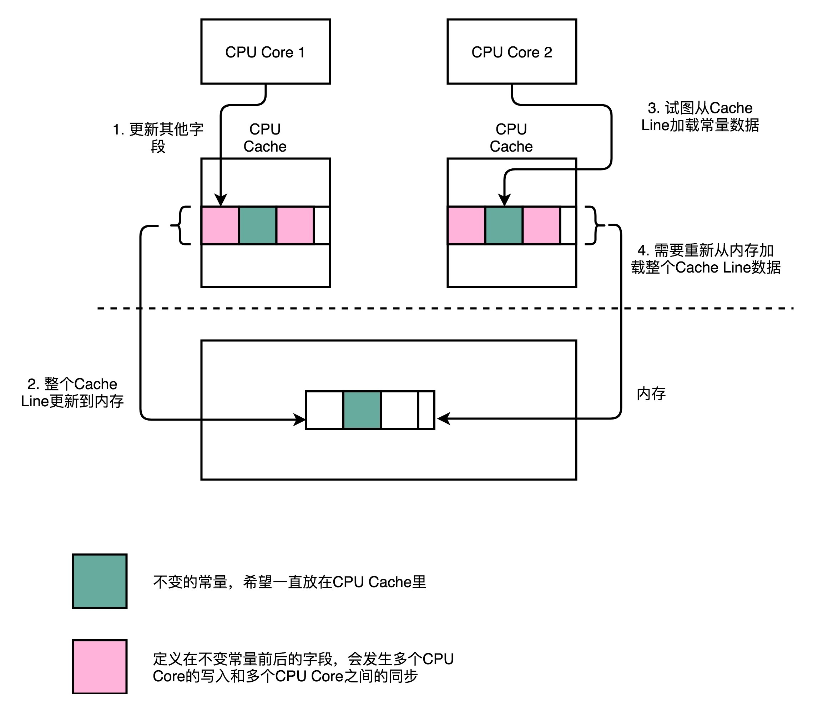
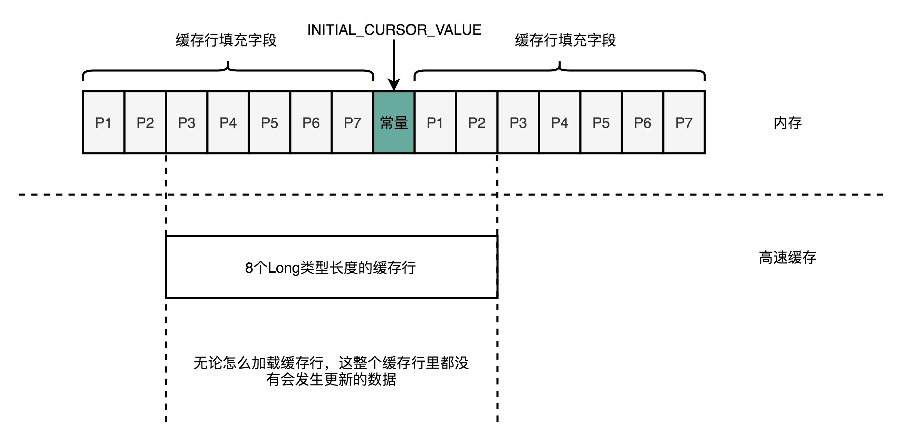
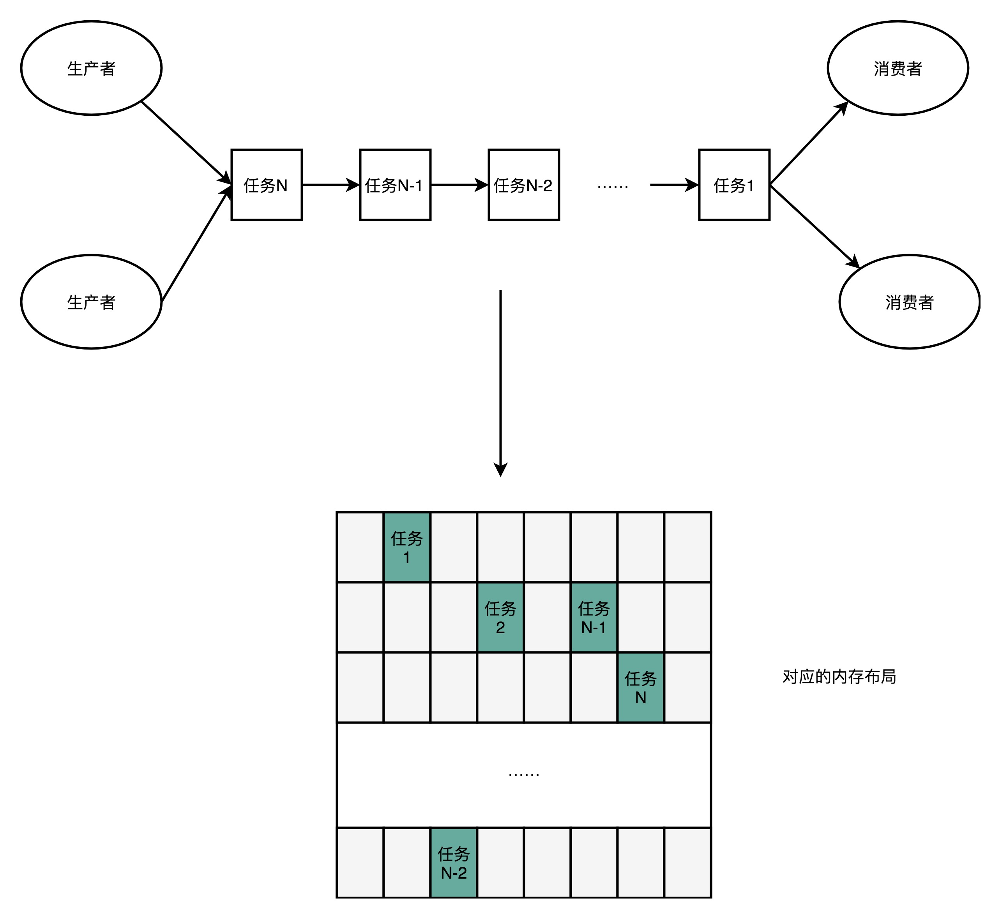
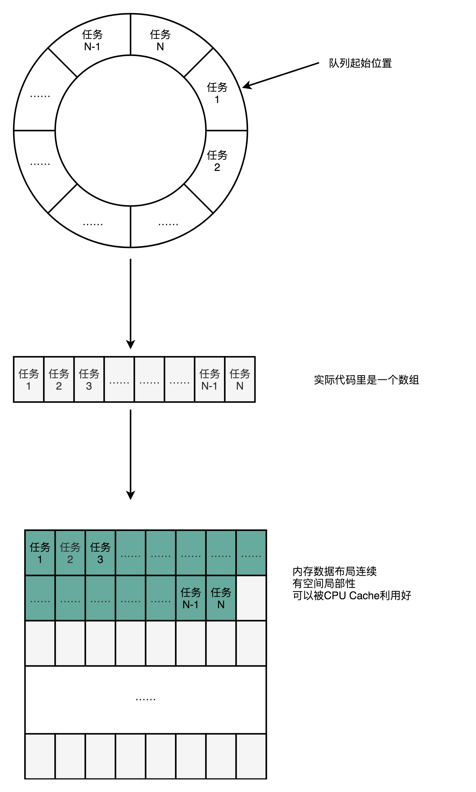

- 00 开篇词 为什么你需要学习计算机组成原理？.md.html
- 01 冯·诺依曼体系结构：计算机组成的金字塔.md.html
- 02 给你一张知识地图，计算机组成原理应该这么学.md.html
- 03 通过你的CPU主频，我们来谈谈“性能”究竟是什么？.md.html
- 04 穿越功耗墙，我们该从哪些方面提升“性能”？.md.html
- 05 计算机指令：让我们试试用纸带编程.md.html
- 06 指令跳转：原来if...else就是goto.md.html
- 07 函数调用：为什么会发生stack overflow？.md.html
- 08 ELF和静态链接：为什么程序无法同时在Linux和Windows下运行？.md.html
- 09 程序装载：“640K内存”真的不够用么？.md.html
- 10 动态链接：程序内部的“共享单车”.md.html
- 11 二进制编码：“手持两把锟斤拷，口中疾呼烫烫烫”？.md.html
- 12 理解电路：从电报机到门电路，我们如何做到“千里传信”？.md.html
- 13 加法器：如何像搭乐高一样搭电路（上）？.md.html
- 14 乘法器：如何像搭乐高一样搭电路（下）？.md.html
- 15 浮点数和定点数（上）：怎么用有限的Bit表示尽可能多的信息？.md.html
- 16 浮点数和定点数（下）：深入理解浮点数到底有什么用？.md.html
- 17 建立数据通路（上）：指令加运算=CPU.md.html
- 18 建立数据通路（中）：指令加运算=CPU.md.html
- 19 建立数据通路（下）：指令加运算=CPU.md.html
- 20 面向流水线的指令设计（上）：一心多用的现代CPU.md.html
- 21 面向流水线的指令设计（下）：奔腾4是怎么失败的？.md.html
- 22 冒险和预测（一）：hazard是“危”也是“机”.md.html
- 23 冒险和预测（二）：流水线里的接力赛.md.html
- 24 冒险和预测（三）：CPU里的“线程池”.md.html
- 25 冒险和预测（四）：今天下雨了，明天还会下雨么？.md.html
- 26 Superscalar和VLIW：如何让CPU的吞吐率超过1？.md.html
- 27 SIMD：如何加速矩阵乘法？.md.html
- 28 异常和中断：程序出错了怎么办？.md.html
- 29 CISC和RISC：为什么手机芯片都是ARM？.md.html
- 30 GPU（上）：为什么玩游戏需要使用GPU？.md.html
- 31 GPU（下）：为什么深度学习需要使用GPU？.md.html
- 32 FPGA、ASIC和TPU（上）：计算机体系结构的黄金时代.md.html
- 33 解读TPU：设计和拆解一块ASIC芯片.md.html
- 34 理解虚拟机：你在云上拿到的计算机是什么样的？.md.html
- 35 存储器层次结构全景：数据存储的大金字塔长什么样？.md.html
- 36 局部性原理：数据库性能跟不上，加个缓存就好了？.md.html
- 37 理解CPU Cache（上）：“4毫秒”究竟值多少钱？.md.html
- 38 高速缓存（下）：你确定你的数据更新了么？.md.html
- 39 MESI协议：如何让多核CPU的高速缓存保持一致？.md.html
- 40 理解内存（上）：虚拟内存和内存保护是什么？.md.html
- 41 理解内存（下）：解析TLB和内存保护.md.html
- 42 总线：计算机内部的高速公路.md.html
- 43 输入输出设备：我们并不是只能用灯泡显示“0”和“1”.md.html
- 44 理解IO_WAIT：IO性能到底是怎么回事儿？.md.html
- 45 机械硬盘：Google早期用过的“黑科技”.md.html
- 46 SSD硬盘（上）：如何完成性能优化的KPI？.md.html
- 47 SSD硬盘（下）：如何完成性能优化的KPI？.md.html
- 48 DMA：为什么Kafka这么快？.md.html
- 49 数据完整性（上）：硬件坏了怎么办？.md.html
- 50 数据完整性（下）：如何还原犯罪现场？.md.html
- 51 分布式计算：如果所有人的大脑都联网会怎样？.md.html
- 52 设计大型DMP系统（上）：MongoDB并不是什么灵丹妙药.md.html
- 53 设计大型DMP系统（下）：SSD拯救了所有的DBA.md.html
- 54 理解Disruptor（上）：带你体会CPU高速缓存的风驰电掣.md.html
- 55 理解Disruptor（下）：不需要换挡和踩刹车的CPU，有多快？.md.html
- 结束语 知也无涯，愿你也享受发现的乐趣.md.html
54 理解Disruptor（上）：带你体会CPU高速缓存的风驰电掣
坚持到底就是胜利，终于我们一起来到了专栏的最后一个主题。让我一起带你来看一看，CPU 到底能有多快。在接下来的两讲里，我会带你一起来看一个开源项目 Disruptor。看看我们怎么利用 CPU 和高速缓存的硬件特性，来设计一个对于性能有极限追求的系统。
不知道你还记不记得，在第 37 讲里，为了优化 4 毫秒专门铺设光纤的故事。实际上，最在意极限性能的并不是互联网公司，而是高频交易公司。我们今天讲解的 Disruptor 就是由一家专门做高频交易的公司 LMAX 开源出来的。
有意思的是，Disruptor 的开发语言，并不是很多人心目中最容易做到性能极限的 C/C++，而是性能受限于 JVM 的 Java。这到底是怎么一回事呢？那通过这一讲，你就能体会到，其实只要通晓硬件层面的原理，即使是像 Java 这样的高级语言，也能够把 CPU 的性能发挥到极限。
Padding Cache Line，体验高速缓存的威力
我们先来看看 Disruptor 里面一段神奇的代码。这段代码里，Disruptor 在 RingBufferPad 这个类里面定义了 p1，p2 一直到 p7 这样 7 个 long 类型的变量。
abstract class RingBufferPad
{
protected long p1, p2, p3, p4, p5, p6, p7;
}
我在看到这段代码的第一反应是，变量名取得不规范，p1-p7 这样的变量名没有明确的意义啊。不过，当我深入了解了 Disruptor 的设计和源代码，才发现这些变量名取得恰如其分。因为这些变量就是没有实际意义，只是帮助我们进行缓存行填充（Padding Cache Line），使得我们能够尽可能地用上 CPU 高速缓存（CPU Cache）。那么缓存行填充这个黑科技到底是什么样的呢？我们接着往下看。
不知道你还记不记得，我们在35 讲里面的这个表格。如果访问内置在 CPU 里的 L1 Cache 或者 L2 Cache，访问延时是内存的 1/15 乃至 1/100。而内存的访问速度，其实是远远慢于 CPU 的。想要追求极限性能，需要我们尽可能地多从 CPU Cache 里面拿数据，而不是从内存里面拿数据。

CPU Cache 装载内存里面的数据，不是一个一个字段加载的，而是加载一整个缓存行。举个例子，如果我们定义了一个长度为 64 的 long 类型的数组。那么数据从内存加载到 CPU Cache 里面的时候，不是一个一个数组元素加载的，而是一次性加载固定长度的一个缓存行。
我们现在的 64 位 Intel CPU 的计算机，缓存行通常是 64 个字节（Bytes）。一个 long 类型的数据需要 8 个字节，所以我们一下子会加载 8 个 long 类型的数据。也就是说，一次加载数组里面连续的 8 个数值。这样的加载方式使得我们遍历数组元素的时候会很快。因为后面连续 7 次的数据访问都会命中缓存，不需要重新从内存里面去读取数据。这个性能层面的好处，我在第 37 讲的第一个例子里面为你演示过，印象不深的话，可以返回去看看。
但是，在我们不是使用数组，而是使用单独的变量的时候，这里就会出现问题了。在 Disruptor 的 RingBuffer（环形缓冲区）的代码里面，定义了一个单独的 long 类型的变量。这个变量叫作 INITIAL_CURSOR_VALUE ，用来存放 RingBuffer 起始的元素位置。

CPU 在加载数据的时候，自然也会把这个数据从内存加载到高速缓存里面来。不过，这个时候，高速缓存里面除了这个数据，还会加载这个数据前后定义的其他变量。这个时候，问题就来了。Disruptor 是一个多线程的服务器框架，在这个数据前后定义的其他变量，可能会被多个不同的线程去更新数据、读取数据。这些写入以及读取的请求，会来自于不同的 CPU Core。于是，为了保证数据的同步更新，我们不得不把 CPU Cache 里面的数据，重新写回到内存里面去或者重新从内存里面加载数据。
而我们刚刚说过，这些 CPU Cache 的写回和加载，都不是以一个变量作为单位的。这些动作都是以整个 Cache Line 作为单位的。所以，当 INITIAL_CURSOR_VALUE 前后的那些变量被写回到内存的时候，这个字段自己也写回到了内存，这个常量的缓存也就失效了。当我们要再次读取这个值的时候，要再重新从内存读取。这也就意味着，读取速度大大变慢了。
......
abstract class RingBufferPad
{
protected long p1, p2, p3, p4, p5, p6, p7;
}
abstract class RingBufferFields<E> extends RingBufferPad
{
......
}
public final class RingBuffer<E> extends RingBufferFields<E> implements Cursored, EventSequencer<E>, EventSink<E>
{
public static final long INITIAL_CURSOR_VALUE = Sequence.INITIAL_VALUE;
protected long p1, p2, p3, p4, p5, p6, p7;
......

面临这样一个情况，Disruptor 里发明了一个神奇的代码技巧，这个技巧就是缓存行填充。Disruptor 在 INITIAL_CURSOR_VALUE 的前后，分别定义了 7 个 long 类型的变量。前面的 7 个来自继承的 RingBufferPad 类，后面的 7 个则是直接定义在 RingBuffer 类里面。这 14 个变量没有任何实际的用途。我们既不会去读他们，也不会去写他们。
而 INITIAL_CURSOR_VALUE 又是一个常量，也不会进行修改。所以，一旦它被加载到 CPU Cache 之后，只要被频繁地读取访问，就不会再被换出 Cache 了。这也就意味着，对于这个值的读取速度，会是一直是 CPU Cache 的访问速度，而不是内存的访问速度。
使用 RingBuffer，利用缓存和分支预测
其实这个利用 CPU Cache 的性能的思路，贯穿了整个 Disruptor。Disruptor 整个框架，其实就是一个高速的生产者 - 消费者模型（Producer-Consumer）下的队列。生产者不停地往队列里面生产新的需要处理的任务，而消费者不停地从队列里面处理掉这些任务。

如果你熟悉算法和数据结构，那你应该非常清楚，如果要实现一个队列，最合适的数据结构应该是链表。我们只要维护好链表的头和尾，就能很容易实现一个队列。生产者只要不断地往链表的尾部不断插入新的节点，而消费者只需要不断从头部取出最老的节点进行处理就好了。我们可以很容易实现生产者 - 消费者模型。实际上，Java 自己的基础库里面就有 LinkedBlockingQueue 这样的队列库，可以直接用在生产者 - 消费者模式上。

不过，Disruptor 里面并没有用 LinkedBlockingQueue，而是使用了一个 RingBuffer 这样的数据结构，这个 RingBuffer 的底层实现则是一个固定长度的数组。比起链表形式的实现，数组的数据在内存里面会存在空间局部性。
就像上面我们看到的，数组的连续多个元素会一并加载到 CPU Cache 里面来，所以访问遍历的速度会更快。而链表里面各个节点的数据，多半不会出现在相邻的内存空间，自然也就享受不到整个 Cache Line 加载后数据连续从高速缓存里面被访问到的优势。
除此之外，数据的遍历访问还有一个很大的优势，就是 CPU 层面的分支预测会很准确。这可以使得我们更有效地利用了 CPU 里面的多级流水线，我们的程序就会跑得更快。这一部分的原理如果你已经不太记得了，可以回过头去复习一下第 25 讲关于分支预测的内容。
总结延伸
好了，不知道讲完这些，你有没有体会到 Disruptor 这个框架的神奇之处呢？
CPU 从内存加载数据到 CPU Cache 里面的时候，不是一个变量一个变量加载的，而是加载固定长度的 Cache Line。如果是加载数组里面的数据，那么 CPU 就会加载到数组里面连续的多个数据。所以，数组的遍历很容易享受到 CPU Cache 那风驰电掣的速度带来的红利。
对于类里面定义的单独的变量，就不容易享受到 CPU Cache 红利了。因为这些字段虽然在内存层面会分配到一起，但是实际应用的时候往往没有什么关联。于是，就会出现多个 CPU Core 访问的情况下，数据频繁在 CPU Cache 和内存里面来来回回的情况。而 Disruptor 很取巧地在需要频繁高速访问的常量 INITIAL_CURSOR_VALUE 前后，各定义了 7 个没有任何作用和读写请求的 long 类型的变量。
这样，无论在内存的什么位置上，这个 INITIAL_CURSOR_VALUE 所在的 Cache Line 都不会有任何写更新的请求。我们就可以始终在 Cache Line 里面读到它的值，而不需要从内存里面去读取数据，也就大大加速了 Disruptor 的性能。
这样的思路，其实渗透在 Disruptor 这个开源框架的方方面面。作为一个生产者 - 消费者模型，Disruptor 并没有选择使用链表来实现一个队列，而是使用了 RingBuffer。RingBuffer 底层的数据结构则是一个固定长度的数组。这个数组不仅让我们更容易用好 CPU Cache，对 CPU 执行过程中的分支预测也非常有利。更准确的分支预测，可以使得我们更好地利用好 CPU 的流水线，让代码跑得更快。
推荐阅读
今天讲的是 Disruptor，推荐的阅读内容自然是 Disruptor 的官方文档。作为一个开源项目，Disruptor 在自己GitHub上有很详细的设计文档，推荐你好好阅读一下。
这里面不仅包含了怎么用好 Disruptor，也包含了整个 Disruptor 框架的设计思路，是一份很好的阅读学习材料。另外，Disruptor 的官方文档里，还有很多文章、演讲，详细介绍了这个框架，很值得深入去看一看。Disruptor 的源代码其实并不复杂，很适合用来学习怎么阅读开源框架代码。